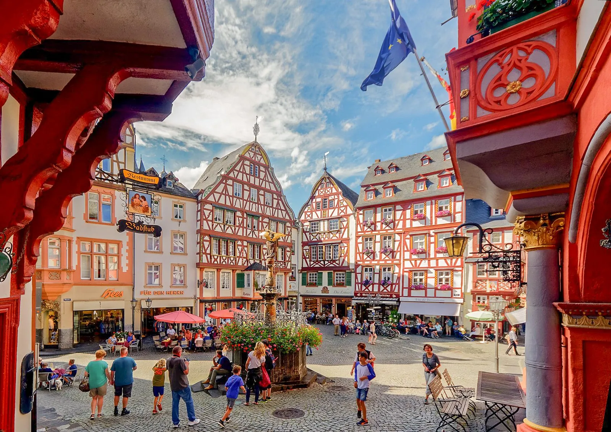

Route A · South
If the weather is fine and the company is wine-loving
Wine & Medieval
Bernkastel marktplatz · Riesling cellars · castles on the Mosel.
Saturday
Late morning in Bernkastel-Kues — the 1416 Spitzhäuschen on the Marktplatz, lunch under half-timber. Afternoon: a tasting at Markus Molitor's Klosterberg vinothek in Zeltingen-Rachtig (no appointment, 10:00-17:00 daily) [24]. Home to dress for dinner.
Sunday
Manderscheid's twin castles on the Lieser river — the Oberburg free, the Niederburg open daily 11:00-17:00 April-November [19]. Optionally bend east to Traben-Trarbach for the Bruno Möhring Jugendstil and the Underworld cellar tour [18].